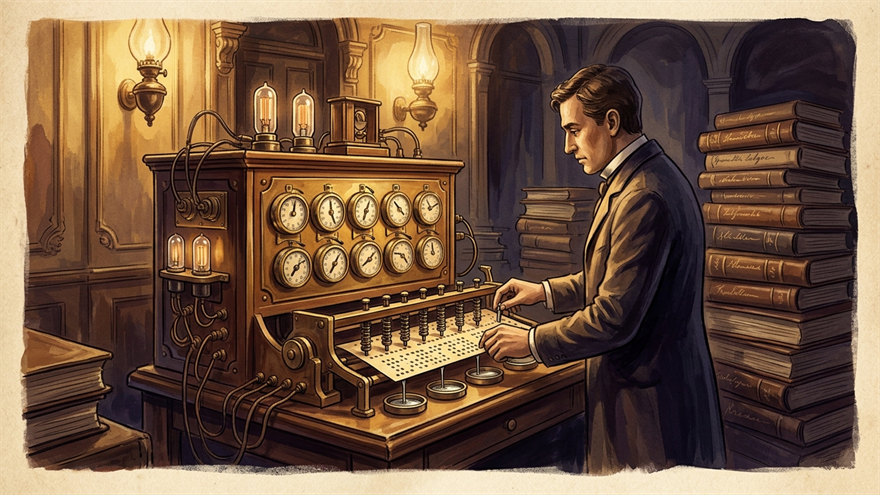

1890
종이 카드에 뚫린 구멍, 7년 걸릴 일을 1년으로
"기계가 카드 6만 장을 1시간에 처리해요!" 5천만 명의 인구 조사를 손으로 세던 시대, 한 청년이 만든 구멍 뚫린 카드가 미국을 해방시켰고 이 회사가 훗날 IBM이 됐어요.

1880년 미국 인구 조사는 거대한 재앙이었어요. 5천만 명의 데이터를 종이 카드에 손으로 적고 손으로 분류하고 손으로 집계해야 했어요. 이 작업이 무려 7년이나 걸렸어요. 1890년 인구 조사를 앞두고 통계국 사람들은 절망했죠. "이번엔 인구가 더 늘었어요. 같은 방식으로 하면 10년이 걸려서 다음 인구 조사 시점이 돼버려요. 도무지 끝이 안 나요."
한 발명가 허먼 홀러리스는 엉뚱한 생각을 떠올렸어요. "종이 카드에 사람 정보를 적되, 글자가 아니라 구멍으로 적자. 25살은 25번째 위치에 구멍, 남자는 남자 위치에 구멍, 직업은 직업별로 구멍. 그리고 그 카드들을 기계에 통과시키면 전기가 구멍으로 통과하면서 자동으로 집계되게."
1890년 인구 조사에 도입된 홀러리스 천공 카드 시스템은 7년 걸리던 작업을 1년으로 줄였어요. 현업의 통계국 관리자들도 변화를 곧바로 체감했죠. "기계가 카드 6만 장을 1시간에 처리해요! 그것도 사람보다 정확하게요. 우리가 해방됐어요!" 이 성공으로 홀러리스는 회사를 세웠고 그 회사가 나중에 합병되어(짐작하셨겠지만) IBM이 돼요.
이게 "데이터를 기계가 처리한다"는 발상의 첫 본격적 사례였어요. 그 후 80년간 천공 카드는 컴퓨터의 표준 입력 방식이었고 1970년대까지도 프로그래머들은 카드에 구멍을 뚫어 컴퓨터에 일을 시켰어요. 1890년 인구 조사에서 기계가 정보를 분류하고 집계하기 시작했죠.
천공 카드(Punch Card)는 종이에 뚫린 구멍의 위치로 데이터를 저장합니다. 카드의 특정 위치가 나이, 성별 같은 정보를 나타냈고 기계는 전기로 그 구멍을 읽어 손으로 하던 계산을 자동으로 처리했습니다.